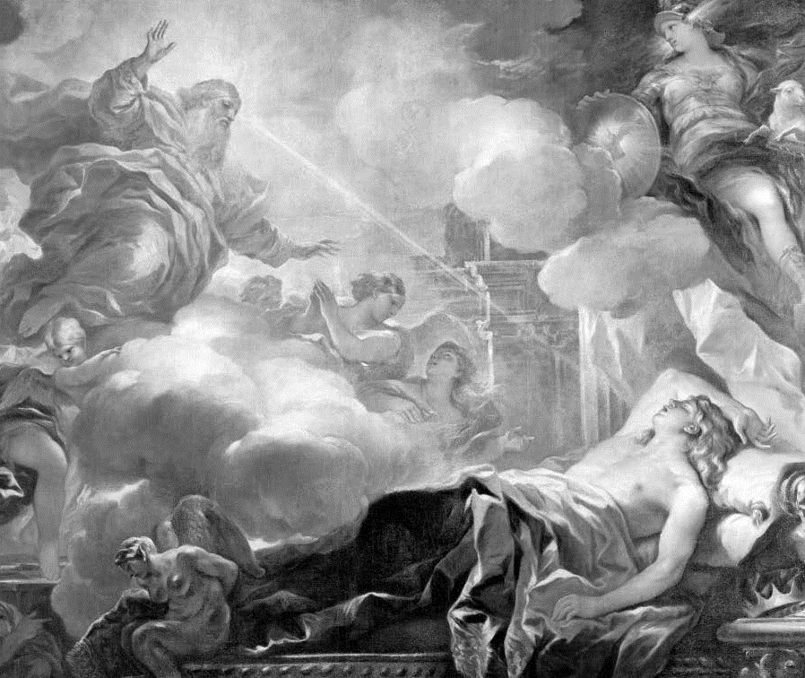

Umut, teselli ve yargı
Bu çalışmada daha önceki bölümlerde Tanrı’nın varoluşu sorununa dair bir şeyler söyledik. Ama şimdi iplikleri birleştirme zamanı geldi. Kimilerine göre bu hayatın en büyük sorusu; tinselliğin, anlamın, değerlerin, umudun ve tesellinin tekerleklerinin üzerinde döndüğü mildir.
Kimilerine göre ise bu soru fanteziden ve mitten başka bir şey vaat etmez. Bazı insanlar dünyalarına renk katmak için düşlerden ve kurgulardan medet umarlar. Bana göre hakikat daha inceliklidir.
Birkaç Tartışma
David Hume’un Doğal Din Üzerine Söyleşiler adlı büyük eserinin sonunda dini bıraktığı noktayı kısaca tekrar ederek başlayacağım. Bu çalışmada üç ana karakter vardır: İlki, Hume’un kendi düşüncelerini seslendiren, dine şüpheyle yaklaşan Philo adlı karakterdir. Cleanthes bir ilahın var olduğunu savunur. Bunun için sermayesi şu ünlü “tasarım delili”dir: Doğanın bu kadar zarif ve harika bir düzene sahip olması ilahi bir mimarın varlığına delalet eder. Tüm doğa Yaratıcı’nın görkemine işaret eder. Son olarak Demea adlı bir karakter vardır. O “filozofların Tanrı’sına” yakınlık duyar: sonsuz, mükemmel, değişmez, kavranamaz, gizemli, öncesiz-sonrasız ya da uzay-zamanı aşan Tanrı’ya. Demea, daha önce değindiğimiz gibi “ Niçin Hiçbir Şey Değil de Bir Şey Var?” sorusu bağlamında Tanrı’ya varmaya çalışmak için “kozmolojik delil”i öne çıkaran Gottfried Wilhelm Leibniz örneğine göre (bkz. Niçin Hiçbir Şey Değil de Bir Şey Var?) kurgulanmış olabilir.
Cleanthes kendisini makul, bilimsel bakışa sahip bir düşünür olarak sunar. İlahi mimarı bilimsel bir akıl yürütmenin doğal bir sonucu olarak ortaya çıkacaktır, tıpkı bir saat bulduğumuzda onun bir saatçi tarafından yapıldığına inanmamız örneğinde olduğu gibi. Ne yazık ki, Newton’un doğadaki düzeni açığa çıkarmasını takip eden yüzyıllarda din savunucularının, bizim zamanımızda da “akıllı tasarım” taraftarlarının sermayesini oluşturan bu analoji iyi bilinen güçlüklerle doludur.
İlkin, bizim kendi yaratıcı etkinliklerimiz büyük oranda fiziksel dünyanın incelikli düzenine bağlıdır. Beyinlerimiz bile saatlerimizden daha karmaşık, daha olağanüstü, daha incelikli bir düzene sahiptir. Dolayısıyla karmaşıklığı açıklamak için “tasarım”ı varsayarsak ve insan eseri şeylerin insanlar tarafından tasarlanması üzerinden kurulan bir analojiye bel bağlarsak, gerçekte sadece açıklamaya kalkıştığımız şeyden daha karmaşık bir şeyi varsayıyoruzdur.
İkinci olarak, insan tasarımcılar bir şeyler yapmak için önceden var olan maddelere ihtiyaç duyarlar, oysa Tanrı’nın her şeyi hiçlikten yaptığı kabul edilir. Üçüncü olarak, bizim fikirlerimiz bu dünyada karşılaştığımız şeylere ilişkin fikirlerdir. Düşüncelerimiz boşlukta oluşmaz, onlar duyu deneylerine verdiğimiz cevapların sonucudur. Ama bunların hiçbiri, fikirlerini hiçlikten çıkaran İlahi Mimar için geçerli değildir. Dördüncü olarak, insan tasarımcıların varlığı anne ve babalarına bağlıdır, yani onlar kendi kendilerinin nedeni değildir. O halde her biri diğerinden sorumlu olan sonsuz bir tanrılar soyu mu varsayacağız? Beşinci olarak, özellikle zarif bir hamleyle, Hume bizim amaçlarımızın ve duygularımızın sürdürdüğümüz dirliksel ve toplumsal yaşamlara uyarlandığına işaret eder. Evrimci psikologların bize hatırlattığı gibi, korku veya öfke gibi duygular korkutucu durumlara, ya da değiştirmek ya da reddetmek istediğimiz toplumsal durumlara uyarlanmalardır. Bu İlahi Mimar için geçerli değildir. Onun belli bir yaşam alanı içinde yaşadığı kabul edilmez.

SÜLEYMAN’IN RÜYASI (yak. 1693)
Luca Giordano (1634-1705)
Yanılsama ve Tasarım
Saatten saatçiye doğru yapılan çıkarım sağlam görünür, çünkü saatin bu şekilde yapıldığını biliyoruz. Ayrıca saatçinin bir saat yaparken kullandığı malzemeleri ve dayandığı ilkeleri de biliyoruz. Ama evrenlerin nasıl varlığa geldiği söz konusu olduğunda, bu tür şeylerle ilgili hiçbir şey bilmiyoruz.
Aslında tasarım delili o kadar kötüdür ki onun neden bu kadar zaman insanların ilgisini çekebildiğini açıklamak daha cazip bir mesele haline geliyor. Bana göre burada insanları “müdahaleci” özgür irade anlayışına yönelten yanılsamayla aynı yanılsama işbaşındadır (bkz. Özgür müyüm?). Gündelik işlerimizi yaparken eylemlerimizi destekleyen ve temelini oluşturan bedenlerimiz ve beyinlerimiz içindeki sayısız nedensel yapının farkında olmayız. Bu durum bize kendi eylemliliğimiz içinde nedensiz bir iradenin örneği olarak görülür. Bu düşünce de bizi bir bedene, bir beyine, fiziksel bir yapıya, ya da hatta bir yere ihtiyaç duymadan eylemde bulunabilen zihin düşüncesine yöneltir. Böylece tasarım evrenin makul bir açıklaması haline gelir. İnsani tasarımın sadece evren içinde yerleşmiş küçük bir yerel üretici ilke olduğunu ve tamamen evren içindeki karmaşık fiziksel yapılara bağlı olduğunu anladığımız anda, bu yanılsama gücünü kaybeder.
Evrenin tasarımcısının hiçbir ekolojik yaşam alanı içinde iskân etmediği gerçeği, onu neyin harekete geçirdiği konusunda tahminde bulunmaktan daha fazlasını yapmamamızı imkânsızlaştırır. Büyük doğa bilimcisi J.B.S. Haldane’in doğanın harika çalışmasına bakılarak ilahın arzuları ve değerleri hakkında ne gibi bir çıkarımda bulunabileceği sorusu karşısında, uzun uzun düşündükten sonra şöyle bir cevap verdiği söylenir: “Böcekleri gereğinden fazla seviyor görünüyor” (bizim tek türümüze karşı beş yüz bin böcek türü olduğu düşünülünce belli bir doğruluk payı olan bir cevap). Belki de bu konuda tahmin edebileceğimiz ancak bu kadardır.
Ama bu güçlükleri bir kenara bıraktığımızı farz edin. İnsan tasarımcıların gruplar halinde çalıştığını, birbirlerinin tasarımlarını düzelttiklerini, bazen tasarımlarına karşı ilgilerini kaybettiklerini, bazen tasarımlarını geliştirdiklerini biliyoruz. Belki de tasarımı bu tür bir resim içinde düşünmeliyiz. Cleanthes’in ilahiyatı bu tasarımcı tasvirinin barındırdığı olasılıkları çok iyi anlatmaktadır:
“Böyle bir kişinin bilebileceği kadarıyla, bu dünya, üstün bir ölçütle karşılaştırıldığı zaman çok kusurlu, yetkinlikten pek uzaktır; bir çocuk ilahın ilk kaba denemesi olabilir, aksak işçiliğinden utanıp belki onu sonradan yüzüstü bırakmıştır: yalnızca bağımlı, aşağı düzeydeki bir ilahi varlığın eseri de olabilir; öyle ki belki üstlerinin alay konusudur, yahut çok yaşlanmış bir ilahın bunaklık çağının ürünüdür de, aldığı ilk hız ve etkin atılışla, onun ölümünden beri kendi başına bir macera yaşamaktadır.”
Bunun üzerine Philo haklı olarak şu sonuca varır: “Kendi adıma ben böylesine savruk ve kararsız bir ilahiyatın, herhangi bir bakımdan, hiç yoktan iyi olduğunu düşünemem.”
Ateist Olmaktan Biraz İyi
İronik olan Demea’nın bu görüşe katılmasıdır: Gerçekten de düşünüldüğünde, Cleanthes’in (insanları model alan) antropomorfik, yani insanbiçimli Tanrı anlayışı onu ateistten daha iyi bir konuma taşımaz! Ama, Leibniz’in kozmolojik delilini tartışırken gördüğümüz gibi (bkz. Neden Hiçbir Şey Değil de Bir Şey Var?) Demea’nın ilahiyatına döndüğümüzde de bir yığın güçlükle karşılaşırız. Sorunun özü şudur: Demea’nın ilah anlayışı bize hiçbir şekilde idrak edilemeyen bir ilah vaat eder. Cleanthes hakkında hiçbir kavrayışımızın olmadığı bir şeye “inanma”ya, yani Demea’nın mistisizmine, sert cevap verir: Bu ateizmden bir nebze daha iyidir! İnsanın gözlerinden saklanmış, gizemli, kavranılamaz, ama mükemmel bir şey! Şimdi size asla içine bakamadığınız bir kutunun içinde ne olduğunu sorsam, sizin onun içinde bir şey olduğunu ya da olmadığını söylemeniz hiç fark etmez.
Bu durumu şöyle ifade edebiliriz: Tasarım delilinin dayanıksız sonuçlarından kaçınmak için insanbiçimli ilah anlayışının içine biraz mistik öğe zerk etmek gerekiyor. Ama ilahının insanlarla ilgili olması için mistik anlayışa da bir doz insanbiçimcilik gerekiyor. O halde Hume ilahiyatın birbirine muhtaç, ama ikisi de sakat olan iki kanadını tutuyor.
Bu arada Philo, ya da Hume şaşırtıcı bir hamle yapar: “Eğer durum buysa, taraflar arasındaki fark sadece sözdedir.” Bu çoğu insana tuhaf gelecektir. Onlar “ilahın varlığı sorunu”nun olabilecek en önemli soru olduğunu düşünürler. Nasıl olur da birisi meselenin sadece sözel bir mesele olduğunu söyleyebilir? Şimdi duruma bir bakalım. Şüpheci Philo, doğanın süregelen düzenini açıklayan ve destekleyen herhangi bir aşkın gerçeklik hakkında hiçbir şey bilemeyeceğimizi ya da idrak edemeyeceğimizi söylüyor. Demea gibi bir teist ise doğanın süregelen düzenini açıklayan ve destekleyen aşkın gerçeklik –Tanrı– hakkında hiçbir şey bilemeyeceğimizi ya da idrak edemeyeceğimizi söylüyor. İkinci anlayış birinci anlayışa bir ara sözcük dışında hiçbir şey eklemediğine göre, onların arasındaki fark sadece sözel bir farktır. İşte Hume’un vardığı sonuç budur. Hume istersek doğanın süregelen düzenine neden olan veya bu düzeni devam ettiren her neyse onun, insan tasarımı da aralarında olmak üzere doğa içindeki şeylerin meydana gelmesini sağlayan diğer güçlerle benzerlik taşıdığı yönünde spekülatif düşünceler üretebileceğimizi de kabul eder.
Bu arada bu muhtemelen Hume’un neden kendisini hiçbir zaman bir ateist olarak tarif etmediğini de açıklamaktadır. Ateist ve teist arasında gizli bir anlaşma vardır: Onlar hakkında tartışılabilecek belirli bir şey olduğunu düşünürler. Bu birisinin “evet” diğerinin “hayır” dediği bir mesele olarak koyulur. Ama Hume’un reddettiği tam da bu görüştür. Gerçekte, Diyaloglar’ın sonunda, dinleyici olarak bulunan küçük Pamphilius, kendisine en cazip görünen akıl yürütme biçiminin Cleanthes’inki olduğunu söyler, ve şaşırtıcı bir şekilde Philo bile, tanımlanmamış bir sonuca sahip olduğu sürece, tasarım deliline iltifatlarda bulunur. Bazı dar bakışlı yorumcular burada Hume’un sözünü geri aldığını düşünürler. Ama hiç de öyle değildir. Eğer uygun bir ilah anlayışınız olmadan kalakaldıysanız, “onun” var olduğunu ya da var olmadığını söylemenizin hiçbir önemi yoktur. “Onun” var olduğu iddiasından ya da ateistin “onun” var olmadığına yönelik iddiasından çıkarsayabileceğiniz herhangi bir ahlaki, siyasi, ampirik ya da teorik sonuç yoktur. Bu taraflardan herhangi birine katılmak ne hakkında konuştuğumuzu bildiğimizi ima eder. Oysa doğru siyasi tavır böyle sanan kişilere gülüp geçmektir.
İnançlar ve Pratikler
Eğer mesele bir inanç meselesiyse, bunun nihai analiz olduğuna inanıyorum. Ama dinin bir şeye inanma meselesi kılığında kendini gizlediğini varsayamaz mıyız? Daha önce neden hiçbir şeyin değil de bir şeyin var olduğu sorusunu ele alıp onun etrafını saran gizemi dağıtmaya çalıştık (bkz. Neden Hiçbir Şey Değil de Bir Şey Var?). Ayrıca Schopenhauer’in ölümlülüğümüzle yüzleşme ihtiyacından dolayı bu sorunun sürekli bir çekiciliğe sahip olduğu yönündeki açıklamasıyla karşılaştık. Bu dürtüyü duygusal doğamıza yerleştirirken Schopenhauer, onun öylesine ortadan kalkacağını ya da ortadan kalkmasının iyi olacağını söylemiyordu. Metafizik dürtüsünün, anlama yetimiz içindeki boşlukların etrafında mitlerini ören dinlere kaçışı hep besleyeceğini düşünüyordu:
Hakikat halkın önünde çıplak olarak ortaya çıkmaz. Dinlerin bu alegorik doğasının bir semptomu, belki her dinde bulunan sırlardır, yani, bırakın harfiyen doğru olmayı, açık bir şekilde bile kavranamayan kesin dogmalardır… bunlar sıradan zihne ve kültürsüz akla idrak edilemez olanı, yani, dinin aslında tamamen farklı bir düzenle ilgilendiğini hissettirmenin tek uygun yoludur… Böylesi bir düzenin mevcudiyetinde, dünyanın onlara göre konuşması gerektiği bu fenomenal dünyanın yasaları yok olur.
Schopenhauer’in bu görüşü Alice’in Aynanın İçinden adlı eserin bir yerinde düştüğü duruma tamamen uymaktadır. Alice kendi kendine şu muhteşem anlamsız “Ejdercenkname” şiirini okumaktadır – “Akşam özdü, yavışkan burguleler/döndeleyip cemrelerken günsatba. . .”:
“Çok güzel görünüyor,” dedi onu bitirdiğinde, “ama anlaşılması oldukça zor” (görüyorsunuz, kendisine bile onu anlamadığını itiraf etmek istemedi). “Bir şekilde kafamı fikirlerle dolduruyor gibi görünüyor – sadece onların tam olarak ne olduklarını bilmiyorum!”
Şimdi birinin Schopenhauer’in peşine düşüp kendi ölümlülüğüyle yüzleşme arzusuna kapıldığını farz edelim. Varoluş bilmecesiyle karşılaşıyor, ve farz edelim ki sonra, gizemci ve insanbiçimci hayaller arasında salınan bir kafayla geri dönüyor. Diyelim ki, uzay ve zamanın ötesinde bir Tanrı’sı oluyor. Ama sonra dünyaya dönüyor; kokuşmuş bir dünya yaratmış mükemmel bir Tanrı; değişmeyen ama aynı zamanda kızan ve düş kırıklığına uğrayan bir Tanrı; bizim gibi olmayan ama kıskanç ve pahalı kurbanlardan memnun olan bir Tanrı; ancak çelişkili terimlerle tanımlanan, ya da belki yetersiz metaforlar ve analojilerle yaklaşılabilen bir Tanrı. Bu imgelemler herhangi bir şeye gerçekten inanıldığını gösterebilirler mi? Onlar gerçek bir inanç adını hak edemeyecek kadar muğlak ve kararsızdır.
Bunlar bir başlangıç sağlayabilir: İnsanda, ya kendini bilmezlikle ya da aşırı özgüvenle öteyi gördüğünü, özellikle de ilahi sisten neşet eden ahlaki ve ameli buyrukları gördüğünü iddia eden başka insanların yol göstericiliğini istemek gibi bir öneğilim oluşturabilirler (tıpkı Tenniel’in Jabberwock çiziminin Lewis Carrol’un okur kuşaklarının tahayyüllerini önceden tayin etmesi gibi). Eğer yeterince etkileyici bir kişi ilhamının idrakimizin karanlığına son verdiğini ve ilahi bir varlığın kendisine “şunları yapmalısın, şunları yapmamalısın” dediğini iddia ederse, insanlar onun uzattığı eli tutarak karanlığın dayanılmaz ağırlığından kurtulmanın ve vaat edilmiş ışığa ulaşmanın baştan çıkarıcılığına teslim olabilirler. Ve böylece insanlar kendilerini imana ve ibadete verebilirler, ayinlerle, kurbanlarla, mitlerle ve her şeyin ötesinde vaatlerle bir arada duran bir cemaat oluşturabilirler. Hiçbiri anlaşılır bir anlam taşımaz, ama hiçbiri de etkilerinin sonuç vermesi için anlaşılır bir anlam taşımak zorunda değildir.
Bu açıklamada, paradoks ve çelişki, dinlerin uyandırdığı karmaşık zihin halleri için bir itiraz teşkil etmez; aksine bunlar onların merkezi bir parçasını oluşturur. Bu aslında tamamen alışılmışın dışında olan bir bakış değildir: Tanrı hakkında olumlu hiçbir şey bilemeyeceğimizi öne çıkaran via negativa veya apopathatik gelenek adı verilen bir ilahiyat akımıdır. Bu gelenek Musevilik ve Hıristiyanlık gibi dogmalara daha fazla önem veren dinlerden ziyade, Budizm ve bazı İslami mezheplerde ön plandadır. Seçkin ekonomist Amarta Sen büyükbabasına ateist olduğunu söylediğinde yaşlı adam, “Ne iyi olmuş” diye cevap vermiş, çünkü bu onun Hinduizmin Lokoyata geleneğine katıldığı anlamına geliyormuş!
Duvar Yazıları
Sonuç olarak “dinsel inançtan” basitçe inançlardan bir inanç, ya da “dinsel hakikatten” hakikatlerden bir hakikat gibi söz etmekte yanıltıcı bir yan vardır. Olağan bağlamlar içinde, diyelim, “odada birkaç kişi var ve odada hiç kimse yok” gibi bir “inanç” aslında inanç değildir. İnanç dünya içinde hareket etmeye kılavuzluk eden bir kanaattir, ama böyle bir cümle söyleyenler kendileriyle çeliştiklerinden kılavuzsuz kalırlar. Aynı şeyin ilahiyat alanındaki çelişkiler için de doğru olması gerekir. Erken dönem kilise babalarından Tertullian’ın Credo quia impossible est (İmkânsız olduğu için inanıyorum), dediği farz edilir. Bu ifade ona şu şekilde karşılık veren mantıkçıları ve filozofları kuşaklar boyu rahatsız etmiştir: Eğer inandığın şey imkânsızsa, o zaman doğru olamaz, ve eğer sen bunu biliyorsan, ya ona inanman mümkün değildir ya da ona inanmaman gerekir. Ama Schopenhauer işlerin hiç de bu şekilde dönmediğini görmemizi sağlamaktadır.
<>
“Dinsel inançtan” basitçe inançlardan bir inanç, ya
da “dinsel hakikatten” hakikatlerden bir hakikat
gibi söz etmekte yanıltıcı bir yan vardır.
<>
Boş bir duvarla karşılaşan insan birçok duygunun etkisiyle duvara kendi graffiti’sini yapma ayartısına kapılır, ya da başkalarının graffiti’sini yapmayı şükranla kabul eder: Bu yüzden vardır mitler, otoriteler ve duvara resim yapma üstatları. Mit kolektif fantezilerin, korkuların ve arzuların kişileştirilmiş halidir. Bu yüzden vardır, insanların acılarını paylaşan, bu dünyadaki adaletsizliği öteki dünyada telafi eden, bizi komşularımıza tercih eden, uygun kurbanlar kesilerek, uygun sakallar uzatılarak, uygun giysiler ve uygun takkeler giyilerek gönlü alınabilen, içine atıldığımız dünyadaki insanlardan daha bağışlayıcı olan ya da kötü olana karşı bu dünyada olandan daha acımasız davranan tanrılara dair hikâyelerimiz.
Dini pratiklere karşı olanlar bunların ortaya çıkardığı kötülükleri saymaya meraklıdır: İlahın kutsal kitaplarında aşağı seviyede oldukları kabul edilenlere karşı zulümler, savaşlar, hak ihlalleri ve baskılar. Bunlar ortak bilgidir. Daha incelikli olan ise duyarlı, insana has ahlaklılığın, tikel bir inancın erdemlerine, ya da şu veya bu inanca olmanın önemine vurgu yapan bir anlayış tarafından yerinden edildiğinde ortaya çıkan çarpıklık ve ikiyüzlülüktür.
Diğer tarafta ise dinsel pratiklerin bir arada tuttuğu toplulukların diğerlerine göre daha güçlü olduğunu gösteren sağlam sosyolojik deliller vardır. Araştırmalara göre ana toplumdan koparak kendine-yeterli bir topluluk kurmaya çalışan ve dini pratikleri olan bir grup, olmayana göre dört kat daha uzun süre hayatta kalmaktadır. Belki de bizler metafizik ihtiyacı üzerimize çullandığında evrimsel olarak ortak ayinlere ve sözlere gerek duyacak şekilde uyarlandık. Ama bunun daha elle tutulur yararları da vardır. Görünmez faillerin varlığına dair imgeler işbirliğine dayanan toplumsal davranışın pekiştirilmesinde önemli bir rol oynayabilir, dolayısıyla da bu tür imgelere duyarlı olan insan grupları için faydalı olabilir. Bu türden etkilerle ilgili birçok deneysel kanıt bulunmaktadır. Çok küçük çocuklara odadaki görünmez bir prensesin kendilerini izlediği söylendiğinde, çocukların kendilerine yasaklanmış olan dolabı açmadıkları görülmüştür. Ortaöğretim öğrencilerine laf arasında ölmüş bir öğrencinin ruhunun arada bir laboratuvarı ziyaret ettiği söylendiğinde, öğrencilerin yaramazlık yapabilecekleri ortamlarda bile işlerinden başlarını kaldırmadıkları görülmüştür. Ve içinde “Tanrı” veya “kutsal” sözcükleri geçen cümlelerle karşılaşan deneklerin çeşitli ekonomi oyunlarında ortaklarına işbirliği teklif etmeye daha yatkın hale geldiği gözlenmiştir.
Son olarak aynı etkiye sahip şu güzel gerçek yaşam örneğimizi hatırlayalım (bkz. Neden İyi Olmalıyız?). Bu ortak bir çay ve kahve makinesini kullananların içtiklerinin karşılığında makinenin yanına asılmış fiyat listesine göre bir miktar para vermeleriyle ilgili bir sorundu. Hiç kimse para bırakmıyordu. Ama fiyat listesinin üstüne doğrudan izleyene bakan bir çift göz resmi koyulduğunda, burada hiç resim olmadığında ya da çiçek resmi gibi bir resim koyulduğunda toplanandan yaklaşık üç kat daha fazla para toplandı.
O halde görünen o ki şu zavallı yaşlı insanlık, bizi düzen içinde tutacak hayali tanıklara, hayaletlere ve görünmez faillere ihtiyaç duyacak kadar bozuktur. Belki de bize mitlerimizi bahşeden yazarlara, sanatçılara, hikâyecilere ve etkili kişilere minnettar olmalıyız, ama elbette anlatılanların neyse o olduklarını unutmadan.